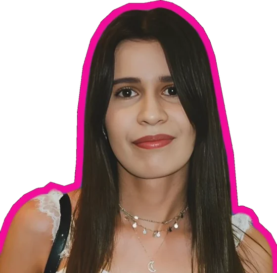

Vous décrivez votre quotidien
Taille de l'équipe, outils utilisés, tâches qui reviennent chaque semaine. Des valeurs par défaut vous aident si vous hésitez.
Répondez à quelques questions guidées sur votre équipe, vos outils et votre quotidien. Vous repartez avec le temps perdu chiffré, les automatisations adaptées à vos outils et votre retour sur investissement estimé.
Bonjour, moi c'est Pistache ! Je vous accompagne à chaque étape de l'audit.
Taille de l'équipe, outils utilisés, tâches qui reviennent chaque semaine. Des valeurs par défaut vous aident si vous hésitez.
Heures et euros perdus, workflows proposés avec vos propres outils, feuille de route et délai de rentabilité.
Un appel avec moi pour valider les priorités, chiffrer précisément le projet et définir un budget réaliste.
Quatre étapes courtes. Vous pouvez revenir en arrière à tout moment, et vos réponses sont gardées si vous fermez la page.
Ces informations servent à calculer le coût réel du temps passé. Seul le coût horaire est indispensable.
Calcul : brut mensuel × 1,42 (charges patronales moyennes) ÷ 151,67 h (mois à 35 h).
Astuce de Pistache : un salarié à 2 800 € brut par mois coûte environ 26 € de l'heure à l'entreprise. C'est ce chiffre qui transforme les heures perdues en euros.
Cochez ce que vous utilisez. Les automatisations proposées s'appuieront dessus : pas besoin de changer d'outils.
Bon à savoir : l'automatisation relie les outils que vous avez déjà. Si un outil n'est pas dans la liste, cochez « Autre », on en parlera pendant l'appel.
Cochez celles qui vous concernent, puis ajustez le nombre de personnes et le temps passé. Une estimation suffit : les valeurs proposées sont des moyennes courantes.
Pour bien estimer : pensez à une semaine normale. 15 minutes par jour, c'est déjà 1 h 15 par semaine et par personne.
Pour orienter les recommandations et préparer notre échange.
Dernière ligne droite ! Votre rapport s'affiche juste après. Rien n'est envoyé tant que vous ne réservez pas d'appel.
Terminez les 4 étapes de l'audit : temps perdu, coût, workflows proposés et retour sur investissement s'afficheront immédiatement.
Reprendre l'auditHeures par an, par tâche : la part rose peut être automatisée.
Classés par priorité : d'abord ce qui rapporte le plus pour le moins d'effort. Construits avec vos outils.
Un déploiement progressif : les premiers gains financent la suite.
Gain net cumulé, mois après mois, une fois l'investissement déduit.

On en parle ?Je suis Melissa, je conçois des automatisations et des outils IA sur mesure pour les entreprises. En un appel, on passe de l'audit à un projet concret.
Prise de rendez-vous via Calendly, dans un nouvel onglet.
Pas de logiciel imposé ni d'usine à gaz : je relie vos outils existants et j'ajoute de l'intelligence là où elle fait gagner du temps.
La plateforme qui enchaîne les étapes de vos processus entre vos logiciels. Elle peut être hébergée en Europe ou sur votre propre serveur, et chaque exécution est tracée.
Lire un email, résumer un document, qualifier une demande, rédiger un brouillon. L'IA intervient aux étapes où il faut comprendre du texte, avec validation humaine quand c'est nécessaire.
Quand il faut un écran simple pour vos équipes ou vos clients (formulaire, tableau de bord, portail), je le développe sur mesure, relié à vos automatisations.
Cet outil, puis notre appel pour cadrer.
Un premier workflow testé sur vos vraies données.
Mise en production, formation de l'équipe.
Mesure des gains, ajustements, nouvelles idées.
Ce sont des estimations construites à partir de vos réponses et de taux d'automatisation moyens. Elles donnent un ordre de grandeur pour décider où commencer. Pendant l'appel, on vérifie chaque hypothèse avec vous pour obtenir un chiffrage précis.
Non. Le calcul se fait dans votre navigateur et vos réponses y restent. Si vous réservez un appel, le résumé de l'audit est simplement pré-rempli dans le formulaire de rendez-vous : vous le voyez et pouvez le modifier avant d'envoyer.
Non, c'est l'inverse : l'automatisation relie les outils que vous utilisez déjà (messagerie, CRM, tableur, facturation…). On n'ajoute un outil que s'il manque une brique indispensable, et on en discute avant.
Les étapes sensibles (un devis, une réponse client inhabituelle, un montant) passent par une validation humaine. L'IA prépare, vous décidez. Chaque exécution est enregistrée, ce qui permet de vérifier et de corriger.
Une automatisation simple est souvent opérationnelle en une semaine. Un projet plus complet se déploie par étapes sur un à trois mois, en commençant par ce qui rapporte le plus vite.
Cela dépend du nombre de processus et de leur complexité. Le rapport donne une fourchette indicative ; le budget réel est établi ensemble pendant l'appel, en fonction de vos priorités et du retour attendu.